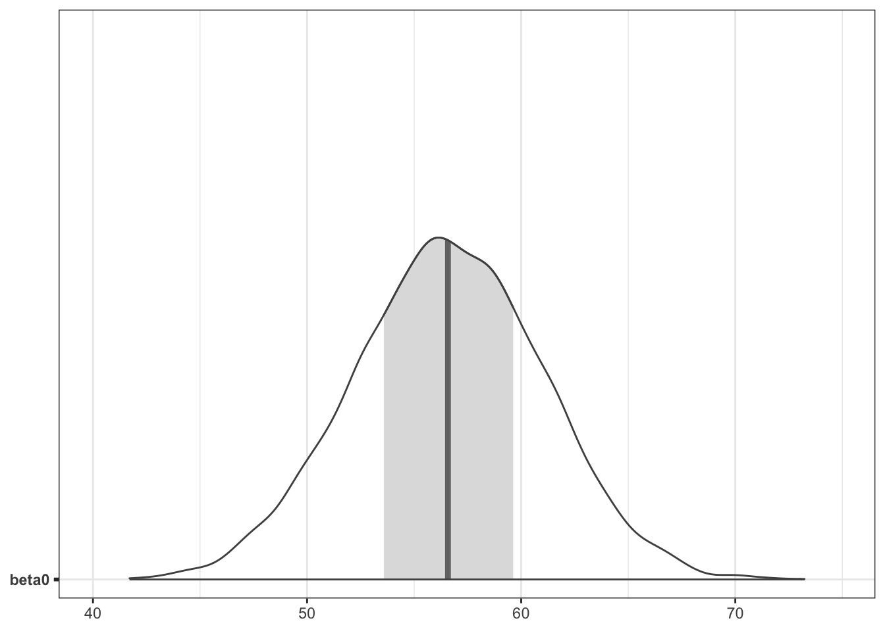
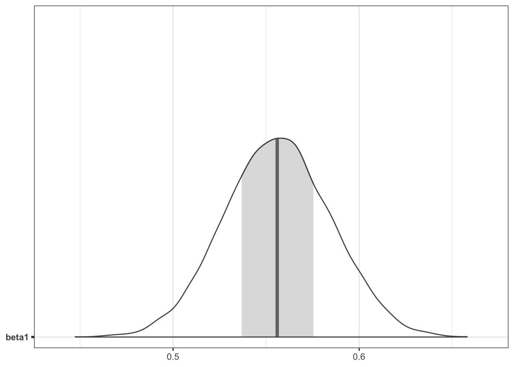
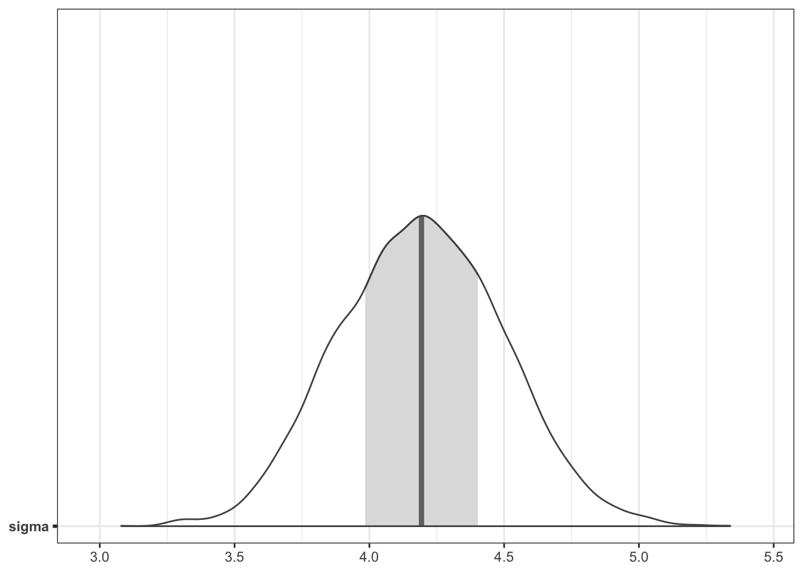
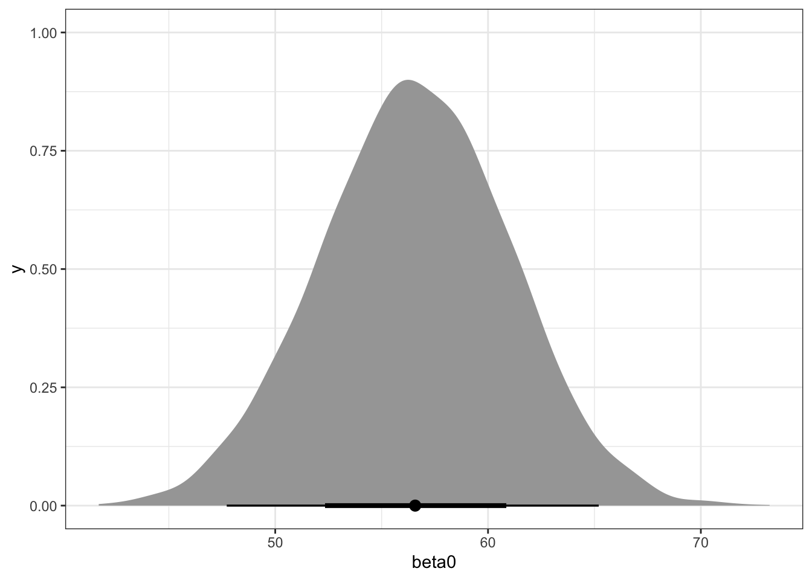
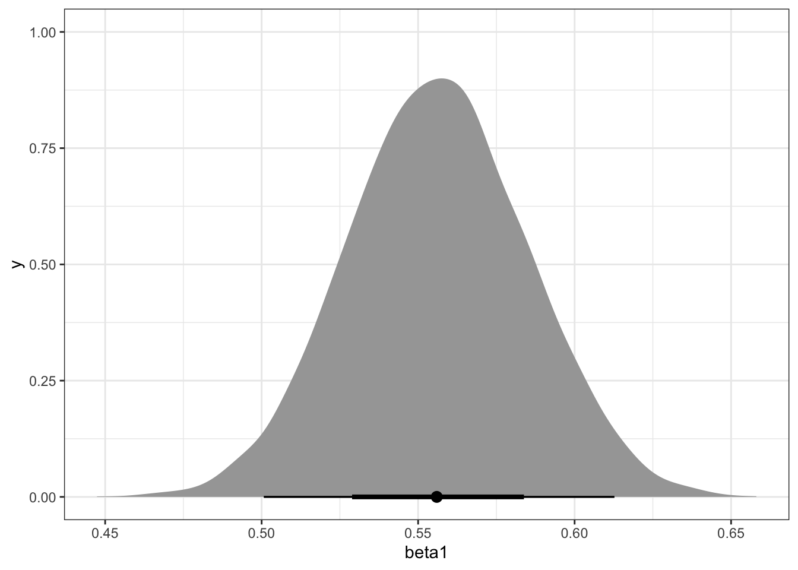
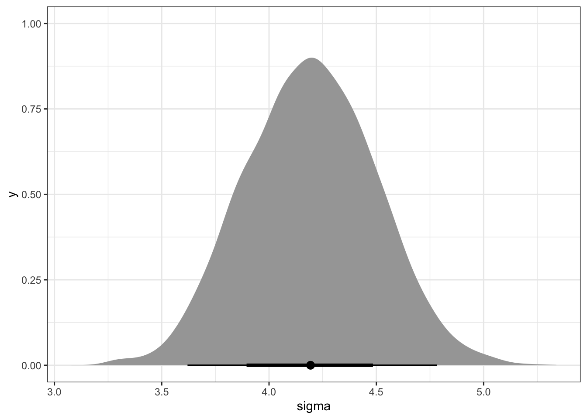

library(tidyverse)
library(ggformula)
library(rethinking)
library(tidybayes)
library(tidybayes.rethinking)
library(posterior)
library(bayesplot)
cmdstanr::check_cmdstan_toolchain(fix = TRUE, quiet = TRUE)
cmdstanr::register_knitr_engine(override = FALSE)
options(mc.cores = 4, # parallel::detectCores()
brms.backend = "cmdstanr")
theme_set(theme_bw())
color_scheme_set(scheme = "gray")
set.seed(123456)rethinking
Install cmdstanr and rethinking
Load rethinking other packages
Simulate data
alpha <- 45
beta <- 0.63
sigma <- 4.23
N <- 100 # 500, 5000, 25000, 100000
x <- seq(130, 180, length.out = N)
mu <- alpha + beta * x
y <- rnorm(N, mean = mu, sd = sigma)
data <- list(x = x, y = y)Build and fit model
fit <- alist(
y ~ dnorm(mu, sigma),
mu <- beta0 + beta1 * x,
beta0 ~ dnorm(178, 20),
beta1 ~ dlnorm(0, 1),
sigma ~ dunif(0, 50)
) |> quap(data = data)
summary(fit)ds <- fit |> recover_types(data) |> spread_draws(beta0, beta1, sigma) |> select(beta0, beta1, sigma) |> as_draws_df()
ds |> summarise_draws()mcmc_areas(ds, "beta0")
mcmc_areas(ds, "beta1")
mcmc_areas(ds, "sigma")
ds |> ggplot(aes(x = beta0)) + stat_halfeye()
ds |> ggplot(aes(x = beta1)) + stat_halfeye()
ds |> ggplot(aes(x = sigma)) + stat_halfeye()